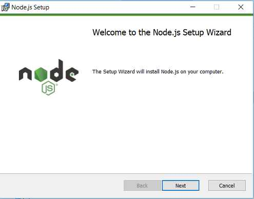
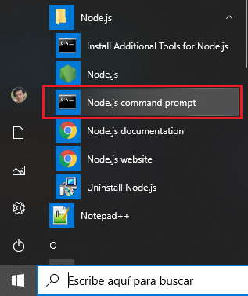
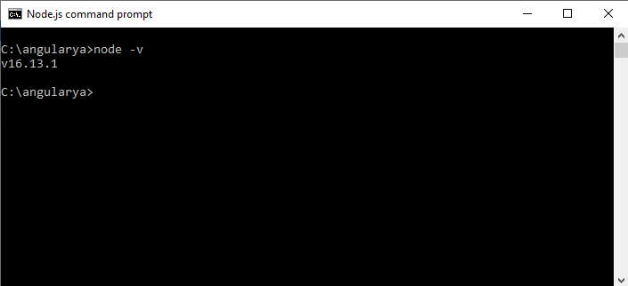
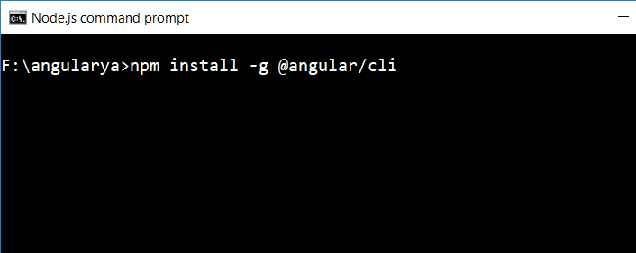

Angular es un framework para el desarrollo de aplicaciones web. Está pensado para dividir un proyecto en componentes y ser reutilizadas en proyectos medianos y grandes.
Sus principales competidores son Vue (proyecto iniciado por Evan You en 2014) y React ( proyecto iniciado por Facebook en 2013)
Angular tiene su salida al mercado en 2016 pero tiene una versión previa no compatible y solo mantenida para proyectos antiguos llamada Angular.js (2010)
El proyecto de Angular es propiedad de la empresa de Google.
La versión de Angular que trabajamos en este tutorial es la 13 (salió el 3/11/2021)
Para desarrollar en forma efectiva una aplicación en Angular debemos instalar al menos dos herramientas básicas:
La primer herramienta a instalar será Node.js, esto debido a que gran cantidad de programas para el desarrollo en Angular están implementadas en Node.
Debemos Descargar e instalar la última versión estable de Node.js:
Una vez instalado debemos ingresar a la línea de comandos que nos provee Nodo.js:
Para comprobar su correcto funcionamiento podemos averiguar su versión:
Para instalar este software lo hacemos desde la misma línea de comandos de Node.js (por eso lo instalamos primero), debemos ejecutar el siguiente comando:
npm install -g @angular/cli
Es importante el -g para que se instale en forma global.